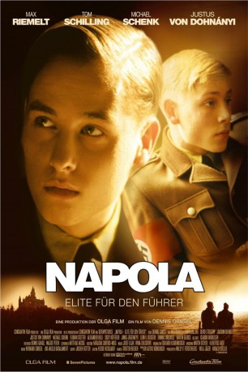

#3030 Napola
Alternativ: Before the Fall (Englischer Titel)
 
 IMDB-Wertung: 7.4 / 10
IMDB-Wertung: 7.4 / 10  Metascore: 65
Metascore: 65 
Deutschland im Jahre 1942: Der 17-jährige Friedrich entstammt dem Arbeitermilieu und ist ein talentierter Boxer. Bei einem seiner Kämpfe wird ein Ausbilder der Napola Allenstein auf ihn aufmerksam und bietet ihm einen Platz an der Eliteschule an, die als Kaderschmiede für das zukünftige Großdeutsche Reich fungiert. Friedrich sieht darin seine große Chance und willigt sofort ein, obwohl sein Vater strikt dagegen ist. In Allenstein angekommen ist Friedrich begeistert von der vorherrschenden Kameradschaft unter den Schülern und freundet sich schnell mit dem sensiblen Gauleitersohn Albrecht an. Als die Jungen dann an einem Einsatz gegen eine Gruppe von entflohenen russischen Kriegsgefangenen teilnehmen, beginnt Friedrich an der nationalsozialistischen Ideologie zu zweifeln.
Jahr: 2004
Dauer: 114 Minuten
FSK: 12
Land: Deutschland Studio: Constantin FilmTonspuren:
Untertitel:
Auflösung: 1080p (1920x816) Größe: 10240 MB
Genre: Drama, Krieg, Sport
Regisseur: Dennis Gansel
Drehbuch: Dennis Gansel, Maggie Peren
Soundtrack: Angelo Badalamenti, Normand Corbeil
Darsteller:
 Max Riemelt als Friedrich Weimer
Max Riemelt als Friedrich Weimer Tom Schilling als Albrecht Stein
Tom Schilling als Albrecht Stein- Martin Goeres als Siegfried Gladen
 Devid Striesow als Vogler
Devid Striesow als Vogler Claudia Michelsen als Frau Stein
Claudia Michelsen als Frau Stein Julie Engelbrecht als Katharina
Julie Engelbrecht als Katharina Dennis Gansel als Trainer Boxverein
Dennis Gansel als Trainer Boxverein- Jonas Jägermeyr als Christoph Schneider
- Leon A. Kersten als Tjaden
- Thomas Drechsel als Hefe
 Florian Stetter als Justus von Jaucher
Florian Stetter als Justus von Jaucher- Joachim Bißmeier als Anstaltsleiter
 Michael Schenk als Sportlehrer
Michael Schenk als Sportlehrer Justus von Dohnányi als Gauleiter Heinrich Stein
Justus von Dohnányi als Gauleiter Heinrich Stein- Johannes Zirner als Torben Send
- Alexander Held als Friedrichs Vater
- Sissy Höfferer als Friedrichs Mutter
- Max Dombrovka als Hans Weimer
- Marian Schole als Peter Fischer
- Jakob Semotan als Jungmann 1
- Lenz von Johnston als Jungmann 2
- Thomas Sittler als Nils Otto
- Hans Dieter Knebel als Major Hendrichs
 Götz Schubert als SS-Führer
Götz Schubert als SS-Führer- Jakub Ulicník als Nase
- Michael Gerber als Biologielehrer
- Michael Rast als Weltanschauungslehrer
- Michael Lerchenberg als Lateinlehrer
- Robert Russel als Mathematiklehrer
- Michael Rones als Erdkundelehrer
- Otmar Brancuzský als Kleiderwart
- Ljuba Krbová als Hefe's Mutter
- Jan Fiala als Fahrer von Heinrich Stein
- Zdenek Maryska als Referendar
 Karel Dobrý als SS-Arzt
Karel Dobrý als SS-Arzt- Zdenek Julina als Angestellter in Kohlenhandlung
- Jana Altmanová als Oma Mertens
- Jan Bláha als Maxe
- Bohumil Svarc als Mann in PKW
- Ota Filip als Hefe's Vater
- Michael Beran als Schüler 7. Zug
- Jan Bidlas als Erzieher Napola Allenstein
- Lukás Fronek als Boxer Oranienstein
- Paval Bartúnek als SS-Offizier 1
- Otta Tesar als SS-Offizier 2
- Radek Zima als SS-Soldat
- Maxim Tretiakov als Russischer Gefangener
- Otokar Harlas als Pastor
- Jan Jarkovský als Jugendlicher Kriegsgefangener
- Johannes Hendrik Langer als Soldat , uncredited
Datei: X:\2004(N-Z)\Napola (2004, FSK12, 1920x816).mkv seit 19.01.2016
Festplatte: HD 2003-2004-2005(A-F)
 Es gibt insgesamt 54 Filme in der Gruppe '2004(N-Z)'
Es gibt insgesamt 54 Filme in der Gruppe '2004(N-Z)'